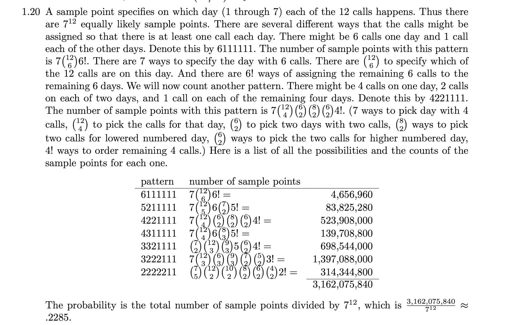

import math
math.comb(12, 7) * math.factorial(7) * 7**5 / 7**124.846960025159585Last updated: Nov 30, 2024.
This problem seems simple enough at first. Each of the 12 phone calls can independently happen on any of the 7 days, so the total number of ways to distribute the phone calls is \(7^{12}\).
We want each day to have atleast one phone call, so let’s first choose 7 out of 12 calls and distribute them one per day. The number of ways to do this is: \({12 \choose 7} \cdot 7!\). Each of the remaining 5 calls can happen on any of the 7 days, so the number of ways is \(7^5\). Putting it all together the probability we want is:
\[ \frac{{12 \choose 7} \cdot 7! \cdot 7^5}{7^{12}} \]
import math
math.comb(12, 7) * math.factorial(7) * 7**5 / 7**124.846960025159585Well, that’s not right. I tried a few other ways to arrive at an answer but couldn’t be sure that any of them were correct. So I gave up and wrote code instead:
import fastrand
def phonecalls():
N = 1_000_000
count = 0
week = [0, 0, 0, 0, 0, 0, 0]
for i in range(N):
for _ in range(12):
week[fastrand.pcg32randint(0, 6)] += 1
if week.count(0) == 0:
count += 1
week = [0, 0, 0, 0, 0, 0, 0]
return count / N
phonecalls()0.228721I looked up the answer in the solutions manual for the textbook. It says:

This answer doesn’t feel very satisfying. Even if I’d come up with it myself, I would feel more confident about the correctness of my code than this answer. Why is it so complicated?
I’m left with more questions about counting:
I initially wrote the code using NumPy but after benchmarking found that: - The vectors aren’t big enough in this case so the overhead of NumPy dominates. - Most of the time is spent in generating the random numbers.
The second point led me to discover the library fastrand and its accompanying paper (Lemire 2018). The impact of just swapping out the random number generator is below:
| method | time |
|---|---|
random.randint |
3460 ms |
fastrand |
770 ms |
I then also wrote the same in Zig just to remind myself how fast our computers really are:
const std = @import("std");
var pcg = std.Random.Pcg.init(0xca24a8e91f6e4c8f);
const rand = pcg.random();
pub fn main() !void {
const tic = std.time.microTimestamp();
var week = [7]u8{ 0, 0, 0, 0, 0, 0, 0 };
const N = 1_000_000;
var count: u32 = 0;
for (0..N) |_| {
@memset(&week, 0);
var idx: usize = 0;
for (0..12) |_| {
idx = rand.intRangeAtMost(u8, 0, 6);
week[idx] += 1;
}
for (week) |d| {
if (d == 0) {
count += 1;
break;
}
}
}
const p: f64 = (N - @as(f64, @floatFromInt(count))) / N;
const toc = std.time.microTimestamp();
const duration: f64 = @as(f64, @floatFromInt(toc - tic)) / 1000.0;
std.debug.print("{d}, {d}ms\n", .{ p, duration });
}$ ./phonecalls
0.227504, 27.699ms